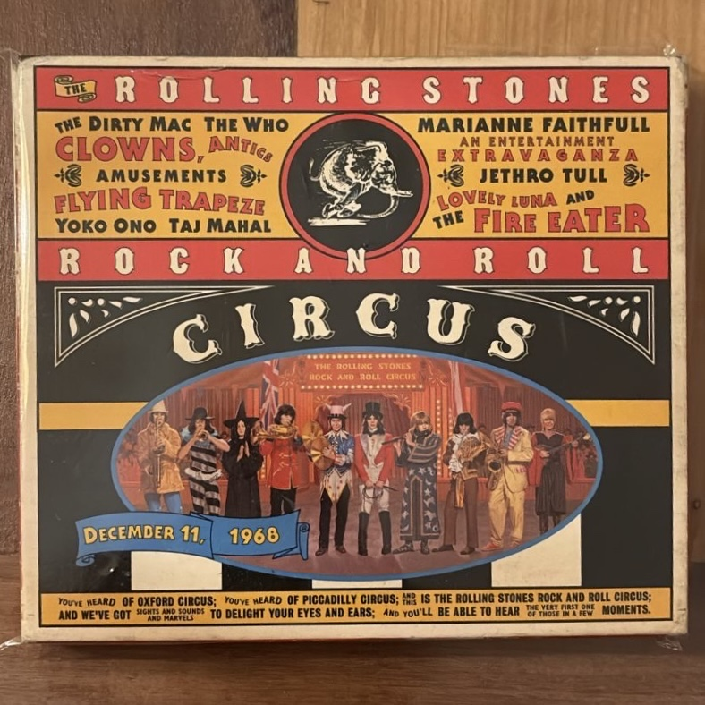

Rock and Roll Circus

Artista: The Rolling Stones (varios artistas)
Año de edición: 1996 (Evento grabado en 1968)
Descripción: Edición especial en formato físico del legendario espectáculo circense organizado por los Rolling Stones, que contó con actuaciones de The Who, Eric Clapton, John Lennon y Marianne Faithfull.
Volver a la página principal